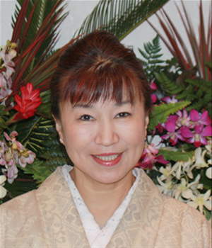

”簡単に自分できものが着られたら・・・”
という願いをかなえるために、あおきの
前結び着付け教室があります。
ご自身で着付けができたらもっと気軽にきものを楽しむことができます。
誰でも簡単に、綺麗に、着崩れしにくい前結び着付け教室を開催しております。
ご都合に合わせたコース設定があり、スピーディに習得できるようになっております。
開講のごあいさつ

あなたを輝かせる魔法のきもの
きものブティックあおきは今年で創業134年、きものを通じて、人生の節目を祝うご家族の愛情や、一人の女性としてきものを着る喜びや楽しさを、より多くの地域のお客様に伝えていきたいと願っています。
このたび、2名の着付け講師を迎え、「あおき前結び着付け教室」を開講いたします。
タンスに眠っているきものや、ご家族から譲られたきものに袖を通しませんか。
前結びなら、楽しくラクラクに覚えられ、みなさんに大好評です。
自分できものが着られたら、ちょっとワクワク！
きものの魔法があなたを素敵に輝かせてくれます。
きものブティックあおき おかみ
青木 りえ子
あおきの前結び着付け教室の特徴
前結びなら①簡単②キレイ③ココチイイ
帯を前で結ぶことで、覚えるのがラクラク、しかもキレイな仕上がり、苦しくない心地よい着付けが楽しめます。
初めての方でも楽しく覚えられます
きもののことを何も知らなくても大丈夫。
優しい講師が、わかりやすく、ていねいに教えます。
講師 初級
門馬尚子先生
講師 初級・中級
戸川逸子先生
手ぶらで無料体験できます
「教室の雰囲気ってどんな感じ？」「私でもできそうかな？」
一度、見学にいらしてみてください。きものがなくても大丈夫。
体験もできます。体験の方には小物・きもの一式お貸しします。
少人数制なので、あなたのペースで学べます
「覚えが悪くついていけないのでは？」そんな心配はありませんので、安心してください！
また少人数制で生徒さんのペースに合わせて教えていきます。
和やかな雰囲気のなかリラックスしてレッスンしていきます。
レッスン中にきものの販売は一切ありません。
いつでも入校OK！
あなたのライフスタイルに合わせて曜日・時間が選べます。
※別紙カレンダーを参照ください。
レッスンの振り替えができます
レッスン日にご都合が悪くなった場合など、事前にご連絡いただければ振り替えレッスンが受けられます。
さくら・かえで・ぼたんの3つのコースをご用意しています
初級さくらコースは、初心者の方を対象にしています。
中級かえでコースは、さくらコースを修了した方が対象、さらに上級ぼたんコースもご用意しています。
また、現在前結びの教室に通っていらっしゃってきものを着られる方、かえでコースからの入校もできます。
また、中級かえでコース・上級ぼたんコースには【特別レッスン】をご用意しています。
きものをより深く楽しんでいただけるレッスンです。
プライベートレッスンも行います
「集中して前結びを覚えたい」「娘の成人式に振袖を着せてあげたい」「自分の都合の良い時間にレッスンがしたい」など、あなたの着付けの目的やご都合に合わせてマンツーマンで集中レッスンできる、ちょっと贅沢なコースです。
※詳細は直接お店まで！
カリキュラム
さくらコース
きものの楽しさを見つける きものの基本を学ぶ
講師 初級
門馬尚子先生
会費
チケット制
10,000円（税込）【全11回】
同じコースをもう一度受講されたい方は半額で受講していただけます。
※チケットの有効期限は6ヶ月です。
※入学金はございません。
※途中退会でも返金は致しかねます。
ご了承ください。
| 回 | 月日 | 授業内容 |
|---|---|---|
| 1 | / | きものの名称 小物の準備・衿ゴム付け きもののたたみ方 |
| 2 | / | 補正の仕方 ベルトの合わせ方 長じゅばん・きものを着てみましょう |
| 3 | / | 長じゅばん・きものを着てみましょう |
| 4 | / | 長じゅばん・きものを着るポイント 前回までの復習 |
| 5 | / | 帯〆・帯揚げの仕方 名古屋帯お太鼓結びとたたみ方 |
| 6 | / | 名古屋帯 お太鼓の結び方 |
| 7 | / | 名古屋帯 お太鼓の結び方 |
| 8 | / | 名古屋帯 お太鼓ポイント柄の出し方 |
| 9 | / | 名古屋帯 お太鼓ポイント柄の出し方 |
| 10 | / | 総復習 |
| 11 | / | 修了証書 袋帯のデモンストレーション |
かえでコース
美しく着る 自分に似合うを見つける
講師 初級・中級
戸川逸子先生
会費
チケット制
15,000円（税込）【全11回】
同じコースをもう一度受講されたい方は半額で受講していただけます。
※チケットの有効期限は6ヶ月です。
※入学金はございません。
※途中退会でも返金は致しかねます。
ご了承ください。
| 回 | 月日 | 授業内容 |
|---|---|---|
| 1 | / | 初級の復習 |
| 2 | / | 袋帯 二重太鼓の結び方 |
| 3 | / | 袋帯 二重太鼓の結び方 |
| 4 | / | 袋帯の柄の合わせ方 |
| 5 | / | 【特別レッスン】小物の美しい付け方・小物コーディネートの基本 |
| 6 | / | きものによる着方の違い |
| 7 | / | 袋帯をキレイに結ぶポイント |
| 8 | / | 【特別レッスン】半衿の付け方 |
| 9 | / | サイズが合わないきものの着方 |
| 10 | / | 総復習 |
| 11 | / | 修了証書 |
※【特別レッスン】は月によって内容が異なります。
※時期によって半中帯のレッスンに変更する場合があります。
ぼたんコース
ステキに着こなす きもの通になる

講師 初級・中級
戸川逸子先生
会費
チケット制
20,000円（税込）【全11回】
同じコースをもう一度受講されたい方は半額で受講していただけます。
※チケットの有効期限は6ヶ月です。
※入学金はございません。
※途中退会でも返金は致しかねます。
ご了承ください。
| 回 | 月日 | 授業内容 |
|---|---|---|
| 1 | / | 中級の復習 |
| 2 | / | 袋帯での角だし |
| 3 | / | 名古屋帯での角だし |
| 4 | / | 【特別レッスン】友禅について学ぼう |
| 5 | / | フォーマルのきものの着方（重ね衿付き） |
| 6 | / | 浴衣の着付け 半巾帯の結び方1 |
| 7 | / | 半巾帯の結び方2 |
| 8 | / | 【特別レッスン】きものに合うヘアメイクレッスン |
| 9 | / | 名古屋帯・袋帯の復習 |
| 10 | / | 総復習 |
| 11 | / | テスト・修了証書 |
※【特別レッスン】は月によって内容が異なります。
※浴衣の着付けの時期は季節によって変動します。
講師紹介
講師 初級
門馬尚子先生
祖母・母が着物の仕立てに携わっていたことで幼い頃からきものに親しむ。
三人の娘を持つ母。
丁寧な着付け指導が好評。
自分で着付けができると世界が広がります。
講師 初級・中級
戸川逸子先生
あおき専属着付け師として、普段の着付けから振袖まで年間170名の着付けをこなす。
「自分に似合う着付け」がテーマ。
楽しく着付けができるお手伝いをいたします。
教室風景

お申し込みフォーム